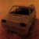

|
 | Vegye már észre magát a drága
jó, agyonhülyített magyar nép magát nemzeti radikálisnak mondó része. Hahó, majomkáim! A ti
agyatok ugyanúgy ki van mosva, csak a másik irányból. Mindenhol kémeket, összeesküvést,
elrejtett tankokat és személyesen Busht szimatoljátok, amint drága hazánk elpusztítására törnek.
Attól azonban, hogy kémek és összeesküvések vannak, és drága hazánkat tényleg szeretnék
elpusztítani néhányan, nem kéne lemenni az ufóelméletek és a holdraszállás-tagadás színvonalára.
Ehelyütt nyilvánosan válaszolok néhány, a napokban szétküldött baromságlevélre, és
ezúton kérem a hülyeségek terjesztõit, hogy inkább írjanak néhány új Y tervet, úgyis kevés az
anyag a Droidzónába! Október 5-én kaptam néhány fényképet Napnyugtaföldi Vízimajom fedõnevû olvasómtól. A Budaörsi úton, egy elkerített
területen egy csomó régi haditechnikai eszközt fedezett fel, és hozzám fordult a kérdéssel, hogy
tudom-e, mi készül ott. Kiállítás? Hadijáték? Jé, mondtam magamban, egy csomó oldschool vas. Amott egy BTR–70-es (a négykerekû
cucc, a Magyar Honvédség hadrendjébõl réges-régen kivonva), elõtte egy T–34-es (második
világháborús technika), ez egy MAZ vontató platóján áll (az még úgy sejtem, rendszerben áll),
körülötte pedig felfedezhetõek régi Ural és Kraz teherautók, hátul egy rozzant T–55-ös
(szintén kivonva) és egy Dvina légvédelmi rakéta (szintén öreg, mint az országút). Faja kis
haditechnikai emlékparkot lehetne ezekbõl összedobni, biztos ez is a szándék. Az más kérdés,
hogy az emlékparknak nagyobb tûzereje lesz, mint a Honvédség aktív csapatainak... De
jött ám menten a reakció is ezekre a postaládámba! Merthogy sajnos felfedezte a címemet egy
rakás ütõdött, és szent kötelességüknek tartják, hogy saját "hírszolgálatuk" ökörségeivel
naponta teleokádják a postaládámat. "Megint mi történik itt?
T–55-ös tankok Bp-en
Néhány nappal ezelott voltam szemtanúja, amint
Ferihegyrol brit Gripen vadászgépek szálltak fel, számszerint 12 darab, kötelékben, hatalmas
sebességgel, a polgári légtérben száguldoztak Magyarországon. Az esetrol másnap a Magyar
Nemzet beszámolt. A minisztériumi magyarázatok szerint "természetesen" csak gyakorlatozni
voltak itt, és amúgy is továbbrepültek Bulgáriába! Hát hogyne! Én meg most jöttem le a
falvédorol. Hírlett, azokban a napokban állítólag tankok állomásoznak egy budapesti Tesco
pincéjében, amirol be is számoltunk itt a Nemzeti Hírhálón. 3 napja tart az újabb megfélemlítés:
Eloször a MNM elnöke jelentette a Hírhálónak, hogy tankokat látott az M1-es M7-es autópálya
találkozásánál, Budapesten, a XI. kerületben. Ezt késobb két nap múlva több Hírháló olvasó is
megerosítette, majd vasárnap a Hír Tv stábja kiment érdeklodni a tankok mibenlétérol. És valóban:
"Természetesen" csupán egy kiállításról van szó: Gyerekeknek! Hogyne! Meg is mutatták az
egyik T-55-ös tank motorját, illetve, annak helyét. A hatalom tényleg ennyire hülyének néz
minket? Már csak azt az éjszakát várom, mikor ezeket a tankokat valódira cserélik ki a
sötétség leple alatt, mondjuk egy esetleges október 23-i bevetés céljából... Elvárnám
(naívan) az ellenzéktol, hogy számonkérje a honvédelmi minisztériumot, a miniszterelnököt,
mivégre provokálják az embereket, pláne októberben!
Skodacsek András, Nemzeti
Hírháló" Kedves Skodacsek András, én ezennel egy hülye paranoiás majomnak nevezlek,
és nem baj, ha megsértõdsz, legalább leveszel végre a hülye listádról. Brit Gripenek, mi?
Legalább néznél körül, hogy mely országokban állnak rendszerben a Gripenek, te barom! Vagy
hogy van-e olyan, hogy "polgári légtér". Igen, te most jöttél a falvédõrõl, egy ostoba,
mûveletlen, paranoiás fasz vagy, aki hülyeségeket írogat. Tele van a fajtáddal a Kossuth tér
(illetve szerencsére már nem), a kémregényeken fantáziáló elmebeteggel, aki sorkatonai
szolgálatára visszaemlékezve katonai és titkosszolgálati szakértõnek képzeli magát. Ülj vissza,
elégtelen.
A levélre válasz is érkezett menten, de hogy miért
hozzám?
"Mindezek jól látható provokációk. A válaszcselekmények beleillenek a
hatalom forgatókönyvébe. Ilyen pl. a kuruc.info provokációja is, amire az egész világ figyel,
mintegy feldobott labdát hogyan csapja le az akcióra várók tömege:
http://www.kuruc.info/r/32/10039/
Miközben felkészült, feltankolt tömegoszlatókkal várják,
esetleg bedobnak egy-két hullát is a már "becsületes" rendõrség soraiba. Véleményem szerint
nem utcai csatákkal kell megoldani a kormány- és ellenzékváltást, mert az csak újabb és
felesleges tragédiákat hoz.
Többet ésszel! János" A Tesco pincéjében
állomásozó tankok tehát provokációk! Mindenhol provokatõrök vannak, vigyázzunk, emberek, az a
gyanús, ami nem gyanús, a Kuruc.info pedig gyanús! De hogy mennyire gyanús?
Ennyire. "Kuruc hívja labancot !!! Kik állnak a kuruc.info mögött !!
Egy, a Heti Válaszhoz került részletes híváslistából kiderül, hogy valójában kik állnak a
kuruc.info szerkesztõsége mögött. A nevek között találjuk többek között a magyar kormányfõt,
Gyurcsány Ferencet, a liberális Fodor Gábort és George W. Busht, az Amerikai Egyesült Államok
elnökét is. Lapunk egyik mobilszolgáltatónál dolgozó lelkes elõfizetõje eljuttatta
szerkesztõségünkhöz a www.kuruc.info szerkesztõjének elmúlt két héti részletes telefonlistáját.
Megfeszített kutatómunkával sikerült kiderítenünk, hogy a Schmidt Mária elmúlt kétheti
telefonálásának hazudott állajstromot nyilvánosságra hozó online újságíró kiket, hányszor és mennyi
ideig hívogatott a Magyar Nemzetben közölt "Horváth Zsolt-cikk" megjelentetését követõen.
A J. Haugwitz néven publikáló szerzõ a vizsgált idõszakban tizennégyszer hívta
Gyurcsány Ferenc miniszterelnököt; a Szembenézés címû Népszabadság melléklet nyomdába küldése
elõtti napon például egyhuzamban másfél órát csevegett a kormányfõvel. A monstre eszmecseréhez
egyébként konferencia üzemmódban Dessewffy Tibor szociológus három alkalommal csatlakozott.
Haugwitz Hiller István pártelnököt is többször megcsörgette, ezen diskurzusok egyike
sem tartott azonban hatvan másodpercnél tovább.
A Kuruc munkatársa Lendvai Ildikóval is
próbálkozott, ám a frakcióvezetõt nem sikerült elérnie, üzenetet pedig nem mert hagyni.
J.
Haugwitz a Népszava fõszerkesztõjével csupán kétszer váltott szót, a Népszabadság központi
számát ellenben tucatnyiszor tárcsázta, míg a 168 óránál hétszer jelentkezett. A híváslista
kiemelt szereplõje Bolgár György, aki egymagában huszonkét bejelentkezést fogadott, és majdnem
ugyanennyit, huszonegyet indított. Elgondolkodtató az az apróság is, hogy Haugwitz
telefonszáma az elsõ helyen található Bolgár György készülékének gyorstárcsázási menüjében.
A szélsõségeként emlegetett internetes magazin zsurnalisztája ugyanakkor jelentõs
mennyiségû liberális irányú mobil kommunikációt bonyolított. Elõbb Kuncze Gáborral társalgott
több alkalommal, majd Fodor Gáborral is trécselt; a tárgyalások fontosságát mutatja, hogy a
Szabad Demokraták Szövetségének újbóli pártelnökjelöltje két esetben hajnali kettõ órakor állt
a szélsõjobboldali szerkesztõ rendelkezésére. Érdekesség ugyanakkor, hogy Haugwitz Kóka János
hat híváspróbálkozását mind a hatszor elutasította.
A kurucos újságíró a birtokunkba
jutott hívásrészletezõ szerint komoly külföldi forgalmat is generált: két titkos jeruzsálemi
számon kívül George W. Bush amerikai elnök rezidenciáját hívta három nap alatt öt alkalommal,
négyszer pedig a kizárólag Putyin elnök számára fenntartott VIP-vonalra csatlakozott. Az
Amerikai Egyesült Államok elsõ embere egy alkalommal vissza is csörgött, ám mivel magyar
partnerét nem találta a telefon mellett, rövid üzenetet hagyott az elektronikus
postaládájában. A mobilcég digitális archívumában megõrzött szöveg szabad fordításban így
hangzik:
Ez az, csak így tovább, húzzunk bele, barátaim!"
Jaj. Fáj. Ne.
Oké, a Kuruc.info-nál se mindenki százas,
de...
Nem is folytatom.
Egy pszichiáter messzemenõ következtetéseket vonna le abból
is, ahogy a leveleket írják. Ahogy a szöveg írása halad, úgy borul el a levélíró agya, és
kapcsol egyre nagyobb betûtípusra, a színeket is váltogatva. Aztán jön az aláhúzás, a villogó
kiemelés, és végül vagy valami olyasmi, hogy "Isten óvja szent hazánk", vagy az árulók
megnevezése.
Többen kérdezték a véleményemet ezekrõl a levelekrõl. Indítványozom a feladók
kényszergyógykezelését. Valamint egy hatékony spamfiltert mindenkinek, akit
megtaláltak.
| | vissza a fõoldalra |  |
| 1 2 3 4 | | | | 

|
 | | | | | | | | | | | | | | | | | | | | 1 2 3 4 | |
|


túraszervezõ
túra-rss
mi ez?

legjobbak
legolvasottabbak
tartalomjegyzék
rss feed

AboryM
Caesar
Count Grishnackh
cscsabi
eürdüngh
Feki
GyalogKakukk
Ishukone
Kadzseszka
LACI1993
Mini
Muska
Rommel
Segi
Takezó
tommylee
vikcee
|